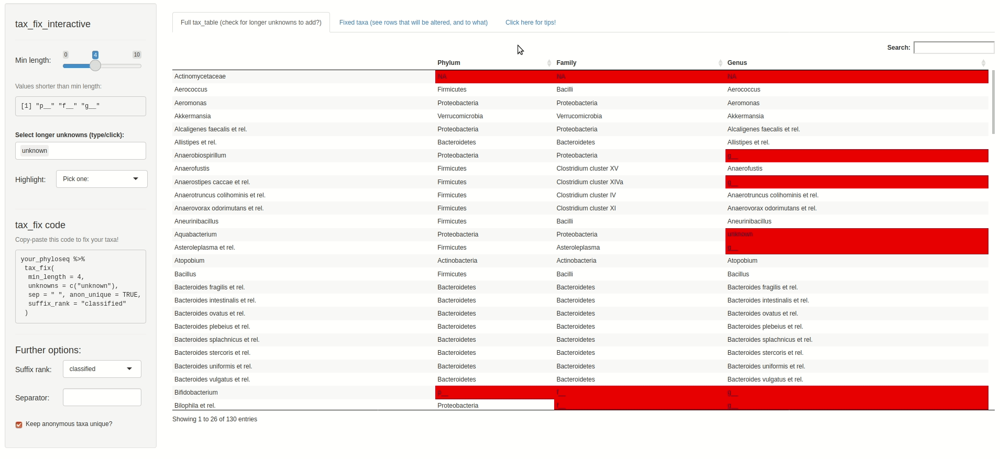

Use tax_fix() on your phyloseq data with default arguments to repair most tax_table problems (missing or uninformative values). If you still encounter errors using e.g. tax_agg, try using the Shiny app tax_fix_interactive() to help you generate tax_fix code that will fix your particular tax_table problems.
This article will explain some of the common problems that can occur in your phyloseq tax_table, and that might cause problems for e.g. tax_agg. You can fix these problems with the help of tax_fix and tax_fix_interactive.
Let’s look at some example data from the corncob package:
pseq <- corncob::ibd_phylo
pseq
#> phyloseq-class experiment-level object
#> otu_table() OTU Table: [ 36349 taxa and 91 samples ]
#> sample_data() Sample Data: [ 91 samples by 15 sample variables ]
#> tax_table() Taxonomy Table: [ 36349 taxa by 7 taxonomic ranks ]The Species rank appears to be blank for many entries. This is a problem you may well encounter in your data: unique sequences or OTUs often cannot be annotated at lower taxonomic ranks.
tax_table(pseq)[1:10, 2:7]
#> Taxonomy Table: [10 taxa by 6 taxonomic ranks]:
#> Phylum Class Order Family
#> OTU.1 "Firmicutes" "Clostridia" "Clostridiales" "Ruminococcaceae"
#> OTU.2 "Bacteroidetes" "Bacteroidia" "Bacteroidales" "Bacteroidaceae"
#> OTU.3 "Bacteroidetes" "Bacteroidia" "Bacteroidales" "Bacteroidaceae"
#> OTU.4 "Bacteroidetes" "Bacteroidia" "Bacteroidales" "Prevotellaceae"
#> OTU.5 "Firmicutes" "Clostridia" "Clostridiales" "Ruminococcaceae"
#> OTU.6 "Firmicutes" "Clostridia" "Clostridiales" "Lachnospiraceae"
#> OTU.7 "Firmicutes" "Negativicutes" "Selenomonadales" "Veillonellaceae"
#> OTU.8 "Bacteroidetes" "Bacteroidia" "Bacteroidales" "Bacteroidaceae"
#> OTU.9 "Firmicutes" "Clostridia" "Clostridiales" ""
#> OTU.10 "Bacteroidetes" "Bacteroidia" "Bacteroidales" "Bacteroidaceae"
#> Genus Species
#> OTU.1 "Faecalibacterium" ""
#> OTU.2 "Bacteroides" ""
#> OTU.3 "Bacteroides" ""
#> OTU.4 "Prevotella" ""
#> OTU.5 "Faecalibacterium" ""
#> OTU.6 "Roseburia" ""
#> OTU.7 "Veillonella" ""
#> OTU.8 "Bacteroides" ""
#> OTU.9 "" ""
#> OTU.10 "Bacteroides" ""If we would try to aggregate at Genus or Family rank level, we discover that blank values at these ranks prevent taxonomic aggregation.
# tax_agg(pseq, rank = "Family") # this fails, and sends (helpful) messages about taxa problemsSo we should run tax_fix first, which will fix most problems (with default settings), allowing taxa to be aggregated successfully (at any rank).
pseq %>% tax_fix() %>% tax_agg(rank = "Family")
#> ps_extra object - a list with phyloseq and extras:
#>
#> phyloseq-class experiment-level object
#> otu_table() OTU Table: [ 59 taxa and 91 samples ]
#> sample_data() Sample Data: [ 91 samples by 15 sample variables ]
#> tax_table() Taxonomy Table: [ 59 taxa by 5 taxonomic ranks ]
#>
#> ps_extra info:
#> tax_agg = Family tax_transform = NAtax_fix finds searches all the ranks of the phyloseq object tax_table for:
short values, like “g__”, "“,” ", etc. (any with fewer characters than min_length)
common, longer but uninformative values like “unknown” (see full list at ?tax_fix)
NAs
tax_fix replaces these values with the next higher taxonomic rank, e.g. an “unknown” Family within the Order Clostridiales will be renamed “Clostridiales Order”.
pseq %>% tax_fix(min_length = 4) %>%
tax_agg("Family") %>%
ps_get() %>% # gets the phyloseq from the ps_extra list
tax_table() %>%
.[1:8, 2:5] # removes the Kingdom rank and shows only first 8 rows for nice printing
#> Taxonomy Table: [8 taxa by 4 taxonomic ranks]:
#> Phylum Class Order
#> Ruminococcaceae "Firmicutes" "Clostridia" "Clostridiales"
#> Bacteroidaceae "Bacteroidetes" "Bacteroidia" "Bacteroidales"
#> Prevotellaceae "Bacteroidetes" "Bacteroidia" "Bacteroidales"
#> Lachnospiraceae "Firmicutes" "Clostridia" "Clostridiales"
#> Veillonellaceae "Firmicutes" "Negativicutes" "Selenomonadales"
#> Clostridiales Order "Firmicutes" "Clostridia" "Clostridiales"
#> Peptostreptococcaceae "Firmicutes" "Clostridia" "Clostridiales"
#> Porphyromonadaceae "Bacteroidetes" "Bacteroidia" "Bacteroidales"
#> Family
#> Ruminococcaceae "Ruminococcaceae"
#> Bacteroidaceae "Bacteroidaceae"
#> Prevotellaceae "Prevotellaceae"
#> Lachnospiraceae "Lachnospiraceae"
#> Veillonellaceae "Veillonellaceae"
#> Clostridiales Order "Clostridiales Order"
#> Peptostreptococcaceae "Peptostreptococcaceae"
#> Porphyromonadaceae "Porphyromonadaceae"You can use tax_fix_interactive() to explore your data’s tax_table visually, and interactively find and fix problematic entries. You can then copy your automagically personalised tax_fix code from tax_fix_interactive’s output, to paste into your script. Below is a screen capture video of tax_fix in action, using some other artificially mangled example data (see details at ?tax_fix_interactive()).
tax_fix_interactive(example_data)
tax_table row are either too short or listed in unknowns argument) will be replaced at all ranks with their unique row name by default (or alternatively with a generic name of “unclassified [highest rank]”, which is useful if you want to aggregate all the unclassified sequences together with tax_agg())taxa_names(enterotype)[1] <- "unclassified taxon" or give them all completely different names with tax_name().tax_table entry repeated across multiple ranks: This is a problem for functions like taxatree_plots(), which need distinct entries at each rank to build the tree structure for plotting. This might happen after you tax_fix data with problem 1. of this list, or in data from e.g. microarray methods like HITchip. The solution is to use tax_prepend_ranks (after tax_fix) to add the first character of the rank to all tax_table entries, or alternatively to use tax_fix with suffix_rank = “current”.Sequences that are unclassified at fairly high ranks e.g. Class are often very low abundance (or possibly represent sequencing errors/chimeras), if you are using data from an environment that is typically well represented in reference databases. So if you are struggling with what to do with unclassified taxa, consider if you can just remove them first with tax_filter() (perhaps using fairly relaxed filtering criteria like min_prevalence of 2 samples, or min_total_abundance of 1000 reads).
microbiome::aggregate_taxa() also solves some tax_table problems, e.g. where multiple distinct genera converge again to the same species name like "" or “s__”, it will make unique taxa names by pasting together all of the rank names. However this can produce some very long names, which need to be manually shortened before use in plots. Plus, it doesn’t replace names like “s__” if they only occur once. Moreover, when creating ordination plots with microViz, only tax_agg() will record the aggregation level for provenance tracking and automated plot captioning.
devtools::session_info()
#> ─ Session info ───────────────────────────────────────────────────────────────
#> setting value
#> version R version 4.0.5 (2021-03-31)
#> os macOS Catalina 10.15.7
#> system x86_64, darwin17.0
#> ui X11
#> language (EN)
#> collate en_US.UTF-8
#> ctype en_US.UTF-8
#> tz UTC
#> date 2021-05-03
#>
#> ─ Packages ───────────────────────────────────────────────────────────────────
#> package * version date lib source
#> ade4 1.7-16 2020-10-28 [1] CRAN (R 4.0.2)
#> ape 5.5 2021-04-25 [1] CRAN (R 4.0.2)
#> Biobase 2.50.0 2020-10-27 [1] Bioconductor
#> BiocGenerics 0.36.1 2021-04-16 [1] Bioconductor
#> biomformat 1.18.0 2020-10-27 [1] Bioconductor
#> Biostrings 2.58.0 2020-10-27 [1] Bioconductor
#> bslib 0.2.4 2021-01-25 [1] CRAN (R 4.0.2)
#> cachem 1.0.4 2021-02-13 [1] CRAN (R 4.0.3)
#> callr 3.7.0 2021-04-20 [1] CRAN (R 4.0.2)
#> cli 2.5.0 2021-04-26 [1] CRAN (R 4.0.2)
#> cluster 2.1.1 2021-02-14 [2] CRAN (R 4.0.5)
#> codetools 0.2-18 2020-11-04 [2] CRAN (R 4.0.5)
#> colorspace 2.0-0 2020-11-11 [1] CRAN (R 4.0.2)
#> corncob 0.1.0 2021-02-10 [1] Github (bryandmartin/corncob@338323e)
#> crayon 1.4.1 2021-02-08 [1] CRAN (R 4.0.3)
#> data.table 1.14.0 2021-02-21 [1] CRAN (R 4.0.2)
#> desc 1.3.0 2021-03-05 [1] CRAN (R 4.0.2)
#> devtools 2.4.0 2021-04-07 [1] CRAN (R 4.0.2)
#> digest 0.6.27 2020-10-24 [1] CRAN (R 4.0.2)
#> dplyr 1.0.5 2021-03-05 [1] CRAN (R 4.0.2)
#> ellipsis 0.3.2 2021-04-29 [1] CRAN (R 4.0.5)
#> evaluate 0.14 2019-05-28 [1] CRAN (R 4.0.1)
#> fansi 0.4.2 2021-01-15 [1] CRAN (R 4.0.2)
#> fastmap 1.1.0 2021-01-25 [1] CRAN (R 4.0.2)
#> foreach 1.5.1 2020-10-15 [1] CRAN (R 4.0.2)
#> fs 1.5.0 2020-07-31 [1] CRAN (R 4.0.2)
#> generics 0.1.0 2020-10-31 [1] CRAN (R 4.0.2)
#> ggplot2 3.3.3 2020-12-30 [1] CRAN (R 4.0.2)
#> glue 1.4.2 2020-08-27 [1] CRAN (R 4.0.2)
#> gtable 0.3.0 2019-03-25 [1] CRAN (R 4.0.2)
#> hms 1.0.0 2021-01-13 [1] CRAN (R 4.0.2)
#> htmltools 0.5.1.1 2021-01-22 [1] CRAN (R 4.0.2)
#> igraph 1.2.6 2020-10-06 [1] CRAN (R 4.0.2)
#> IRanges 2.24.1 2020-12-12 [1] Bioconductor
#> iterators 1.0.13 2020-10-15 [1] CRAN (R 4.0.2)
#> jquerylib 0.1.4 2021-04-26 [1] CRAN (R 4.0.2)
#> jsonlite 1.7.2 2020-12-09 [1] CRAN (R 4.0.2)
#> knitr 1.33 2021-04-24 [1] CRAN (R 4.0.2)
#> lattice 0.20-41 2020-04-02 [2] CRAN (R 4.0.5)
#> lifecycle 1.0.0 2021-02-15 [1] CRAN (R 4.0.2)
#> magrittr 2.0.1 2020-11-17 [1] CRAN (R 4.0.2)
#> MASS 7.3-53.1 2021-02-12 [2] CRAN (R 4.0.5)
#> Matrix 1.3-2 2021-01-06 [2] CRAN (R 4.0.5)
#> memoise 2.0.0 2021-01-26 [1] CRAN (R 4.0.2)
#> mgcv 1.8-34 2021-02-16 [2] CRAN (R 4.0.5)
#> microViz * 0.7.4.9001 2021-05-03 [1] local
#> multtest 2.46.0 2020-10-27 [1] Bioconductor
#> munsell 0.5.0 2018-06-12 [1] CRAN (R 4.0.2)
#> nlme 3.1-152 2021-02-04 [2] CRAN (R 4.0.5)
#> permute 0.9-5 2019-03-12 [1] CRAN (R 4.0.2)
#> phyloseq * 1.34.0 2020-10-27 [1] Bioconductor
#> pillar 1.6.0 2021-04-13 [1] CRAN (R 4.0.2)
#> pkgbuild 1.2.0 2020-12-15 [1] CRAN (R 4.0.2)
#> pkgconfig 2.0.3 2019-09-22 [1] CRAN (R 4.0.2)
#> pkgdown 1.6.1 2020-09-12 [1] CRAN (R 4.0.2)
#> pkgload 1.2.1 2021-04-06 [1] CRAN (R 4.0.2)
#> plyr 1.8.6 2020-03-03 [1] CRAN (R 4.0.2)
#> prettyunits 1.1.1 2020-01-24 [1] CRAN (R 4.0.2)
#> processx 3.5.2 2021-04-30 [1] CRAN (R 4.0.5)
#> progress 1.2.2 2019-05-16 [1] CRAN (R 4.0.2)
#> ps 1.6.0 2021-02-28 [1] CRAN (R 4.0.2)
#> purrr 0.3.4 2020-04-17 [1] CRAN (R 4.0.2)
#> R6 2.5.0 2020-10-28 [1] CRAN (R 4.0.2)
#> ragg 0.4.1 2021-01-11 [1] CRAN (R 4.0.2)
#> Rcpp 1.0.6 2021-01-15 [1] CRAN (R 4.0.2)
#> remotes 2.3.0 2021-04-01 [1] CRAN (R 4.0.2)
#> reshape2 1.4.4 2020-04-09 [1] CRAN (R 4.0.2)
#> rhdf5 2.34.0 2020-10-27 [1] Bioconductor
#> rhdf5filters 1.2.0 2020-10-27 [1] Bioconductor
#> Rhdf5lib 1.12.1 2021-01-26 [1] Bioconductor
#> rlang 0.4.11 2021-04-30 [1] CRAN (R 4.0.5)
#> rmarkdown 2.7 2021-02-19 [1] CRAN (R 4.0.2)
#> rprojroot 2.0.2 2020-11-15 [1] CRAN (R 4.0.2)
#> S4Vectors 0.28.1 2020-12-09 [1] Bioconductor
#> sass 0.3.1 2021-01-24 [1] CRAN (R 4.0.2)
#> scales 1.1.1 2020-05-11 [1] CRAN (R 4.0.2)
#> sessioninfo 1.1.1 2018-11-05 [1] CRAN (R 4.0.2)
#> stringi 1.5.3 2020-09-09 [1] CRAN (R 4.0.2)
#> stringr 1.4.0 2019-02-10 [1] CRAN (R 4.0.2)
#> survival 3.2-10 2021-03-16 [2] CRAN (R 4.0.5)
#> systemfonts 1.0.1 2021-02-09 [1] CRAN (R 4.0.2)
#> testthat 3.0.2 2021-02-14 [1] CRAN (R 4.0.3)
#> textshaping 0.2.1 2020-11-13 [1] CRAN (R 4.0.2)
#> tibble 3.1.1 2021-04-18 [1] CRAN (R 4.0.2)
#> tidyselect 1.1.1 2021-04-30 [1] CRAN (R 4.0.5)
#> usethis 2.0.1 2021-02-10 [1] CRAN (R 4.0.3)
#> utf8 1.2.1 2021-03-12 [1] CRAN (R 4.0.2)
#> vctrs 0.3.8 2021-04-29 [1] CRAN (R 4.0.5)
#> vegan 2.5-7 2020-11-28 [1] CRAN (R 4.0.2)
#> withr 2.4.2 2021-04-18 [1] CRAN (R 4.0.2)
#> xfun 0.22 2021-03-11 [1] CRAN (R 4.0.2)
#> XVector 0.30.0 2020-10-28 [1] Bioconductor
#> yaml 2.2.1 2020-02-01 [1] CRAN (R 4.0.2)
#> zlibbioc 1.36.0 2020-10-28 [1] Bioconductor
#>
#> [1] /Users/runner/work/_temp/Library
#> [2] /Library/Frameworks/R.framework/Versions/4.0/Resources/library